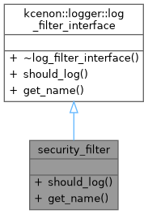
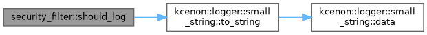

Loading...
Searching...
No Matches
security_filter Class Reference
Inheritance diagram for security_filter:

Collaboration diagram for security_filter:

Public Member Functions | |
| bool | should_log (const log_entry &entry) const override |
| Check if a log entry should be processed. | |
| std::string | get_name () const override |
| Get the name of this filter. | |
 Public Member Functions inherited from kcenon::logger::log_filter_interface Public Member Functions inherited from kcenon::logger::log_filter_interface | |
| virtual | ~log_filter_interface ()=default |
Detailed Description
- Examples
- security_demo.cpp.
Definition at line 39 of file security_demo.cpp.
Member Function Documentation
◆ get_name()
|
inlineoverridevirtual |
Get the name of this filter.
- Returns
- Filter name for identification
Implements kcenon::logger::log_filter_interface.
- Examples
- security_demo.cpp.
Definition at line 52 of file security_demo.cpp.
52 {
53 return "security_filter";
54 }
◆ should_log()
|
inlineoverridevirtual |
Check if a log entry should be processed.
- Parameters
-
entry The log entry to check
- Returns
- true if the entry should be logged, false otherwise
Implements kcenon::logger::log_filter_interface.
- Examples
- security_demo.cpp.
Definition at line 41 of file security_demo.cpp.
41 {
43
44 // Block logs containing passwords
45 if (message.find("password") != std::string::npos) {
46 std::cout << "[SECURITY] Blocked log containing password" << std::endl;
47 return false;
48 }
49 return true;
50 }
References kcenon::logger::log_entry::message, and kcenon::logger::small_string< SSO_SIZE >::to_string().
Here is the call graph for this function:

The documentation for this class was generated from the following file:
- examples/security_demo.cpp